Outer Wilds este un joc de acțiune-aventură axat pe explorarea unui sistem solar prins într-o buclă temporală de 22 de minute. Fii pregătit să mori. De multe ori.
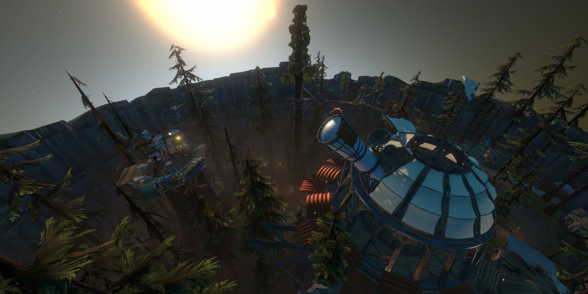
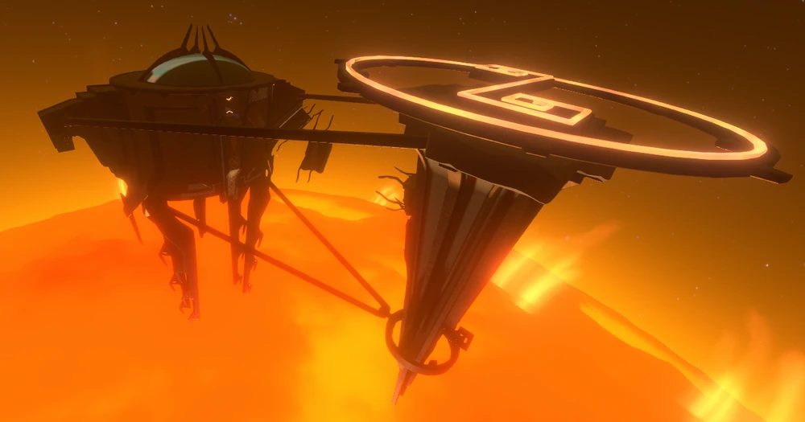 Sun Station |
O structură Nomai grandioasă ce orbitează la o distanță critică de Soare. Construită cu scopul periculos de a provoca o supernovă, stația este acum doar o ruină abandonată și o provocare extremă pentru piloții care încearcă o aterizare manuală. |
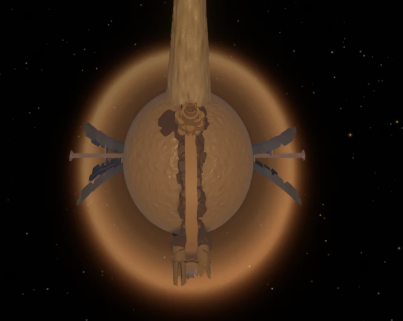 Ash Twin |
Nucleul întregii bucle temporale. La începutul fiecărui ciclu, planeta este complet acoperită de un ocean de nisip. Pe măsură ce nisipul se scurge către planeta geamănă, dezvăluie Turnurile de Teleportare și deblochează calea spre cel mai mare secret al speciei Nomai. |
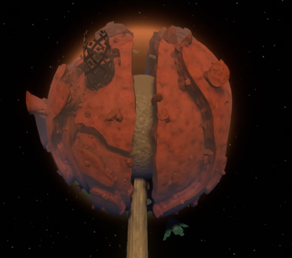 Ember Twin |
Un deșert stâncos brăzdat de canioane, ce ascunde sub scoarța sa Orașul Fără Soare și o rețea uriașă de peșteri. Explorarea aici este o cursă contra cronometru, deoarece cavernele se umplu neiertător cu nisipul transferat de pe Ash Twin. |
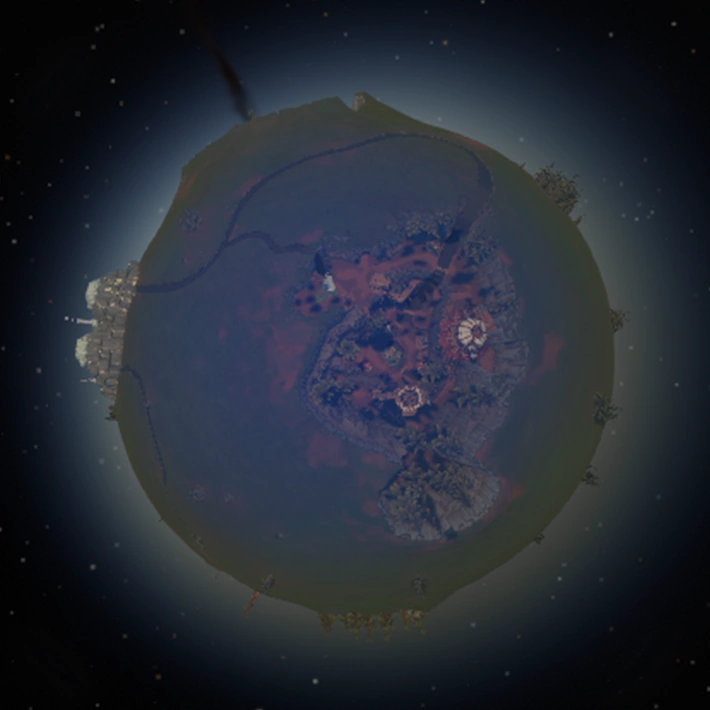 Timber Hearth |
Acasă. O planetă liniștită, plină de pini, gheizere masive și cratere. Aici se află Observatorul și satul tău natal. Deși pare o zonă complet sigură la suprafață, adâncurile ei ascund mine abandonate de Nomai și semințe extraterestre periculoase. |
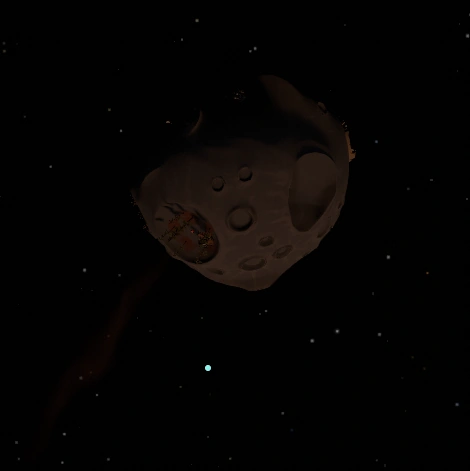 Attlerock |
Luna planetei Timber Hearth și tabăra exploratorului Esker. Suprafața sa marcată de cratere găzduiește primele ruine Nomai pe care le vei întâlni (un detector de semnale antic) și este locul perfect pentru a-ți exersa aterizările la începutul călătoriei. |
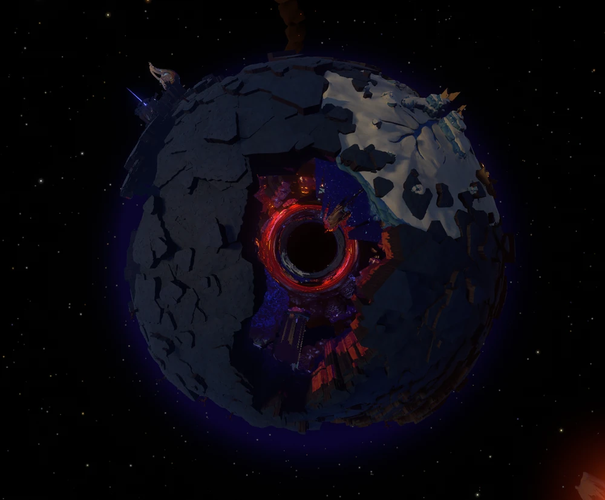 Brittle Hollow |
O planetă fascinantă a cărei scoarță fragilă se prăbușește bucată cu bucată într-o Gaură Neagră centrală din cauza bombardamentelor vulcanice. Găzduiește impresionantul Oraș Suspendat sub gheață și legendarul Observator Sudic. |
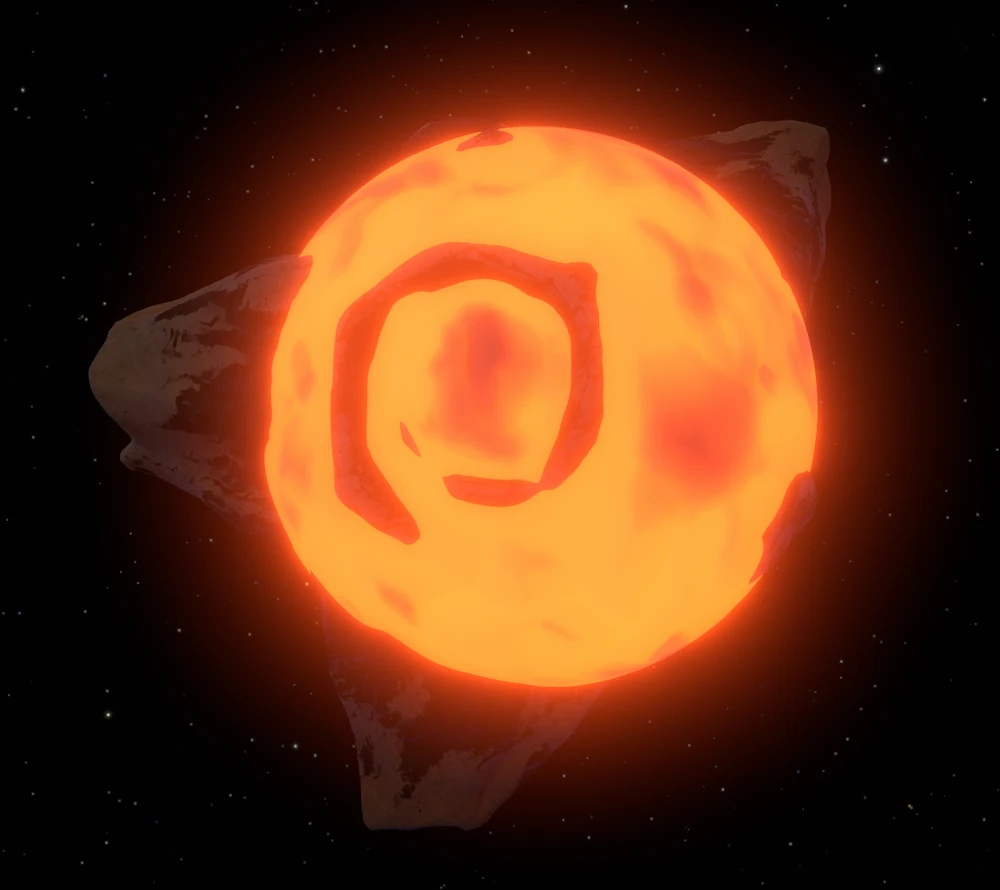 Hollow's Lantern |
O lună vulcanică nemiloasă care aruncă permanent cu meteoriți de lavă spre Brittle Hollow. Deși pare doar un loc mortal și imposibil de vizitat, exploratorii curajoși pot descoperi aici o zonă de testare Nomai ascunsă într-unul dintre vulcani. |
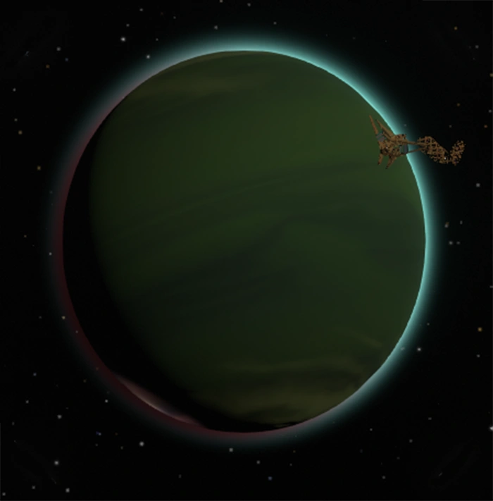 Giant's Deep |
O planetă gazoasă acoperită de un ocean turbulent și furtuni violente. Gravitația ridicată și cicloanele masive aruncă insule întregi direct în spațiu. Sub curenții puternici se află Atelierul de Statui, iar pe orbită plutesc resturile Tunului Orbital. |
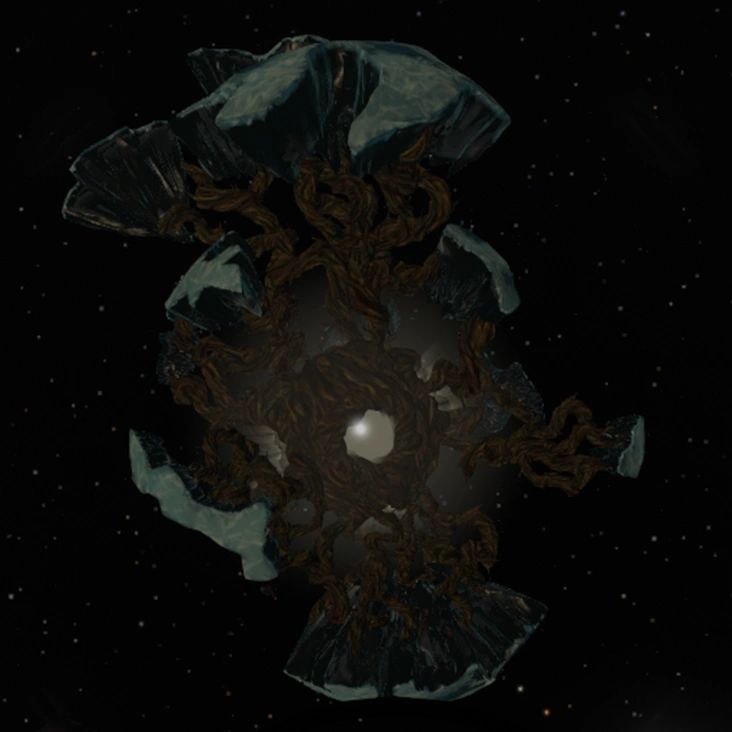 Dark Bramble |
Un coșmar spațial, distrus din interior de o plantă parazită uriașă. Spațiul înăuntru este complet distorsionat: interiorul este mult mai mare decât exteriorul și plin de o ceață densă. Atenție: Monștrii gigantici din ceață (Anglerfish) sunt orbi, dar atacă fulgerător la cel mai mic sunet de motor. |
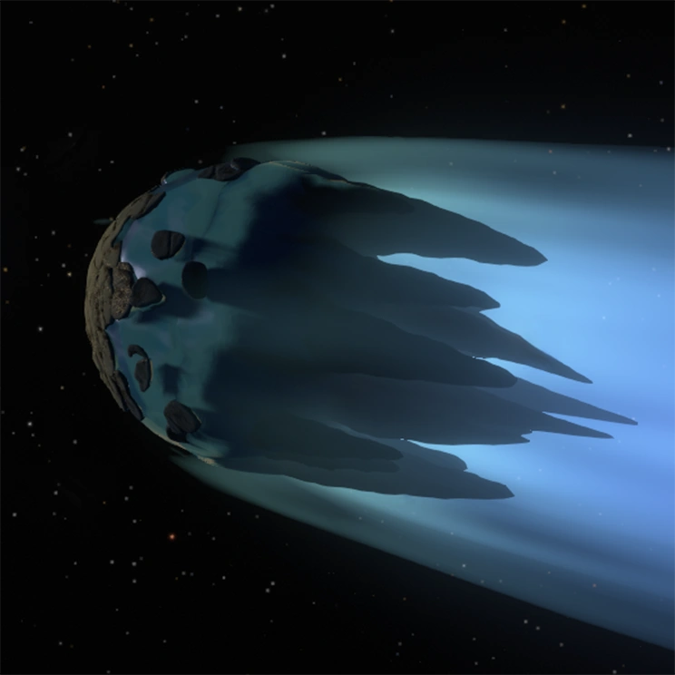 The Interloper |
O cometă de gheață care a adus un final tragic în acest sistem solar. Când se apropie de soare, gheața de pe suprafață se topește parțial, permițând accesul în miezul ei letal, sursa originară pentru Materia Fantomă (Ghost Matter). |
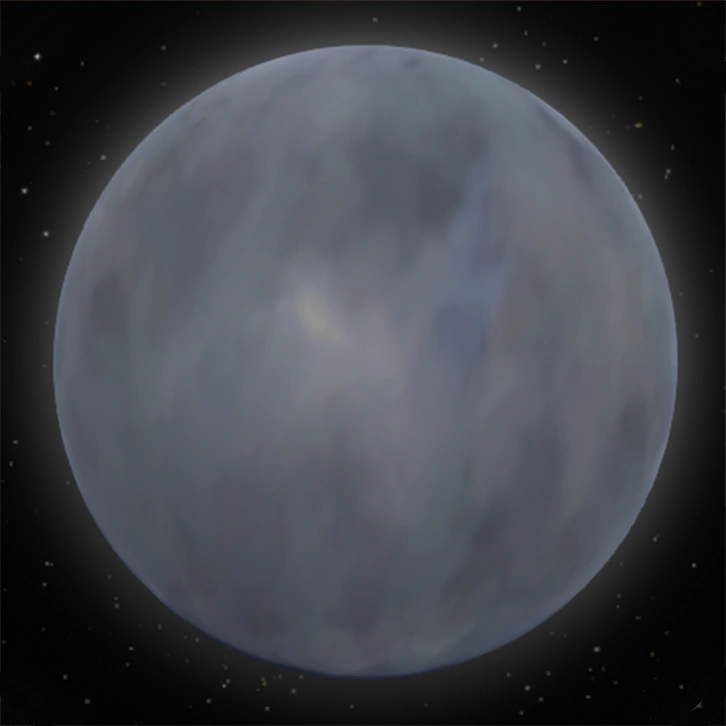 Quantum Moon |
Pelerinajul suprem al speciei Nomai. O lună fantomatică ce își schimbă constant aspectul și locația pe orbita planetelor, dispărând complet atunci când nu te uiți la ea. Aterizarea pe suprafața ei necesită înțelegerea și aplicarea celor trei Reguli Cuantice. |
Ai descoperit o anomalie spațială sau ai o sugestie pentru îmbunătățirea navetei? Lasă-ne un mesaj prin terminalul de mai jos. (Nu necesită cod de acces securizat).